27-高性能负载均衡集群
集群是什么

简单地说，集群就是指一组（若干个）相互独立的计算机，利用高速通信网络组成的一个较大的计算机服务系统，每个集群节点（即集群中的每台计算机）都是运行各自服务的独立服务器。
这些服务器之间可以彼此通信，协同向用户提供应用程序，系统资源和数据，并以单一系统的模式加以管理。
当用户请求集群系统时，集群给用户的感觉就是一个单一独立的服务器，而实际上用户请求的是一组集群服务器。
举个例子：
打开谷歌，百度的页面，看起来好简单，也许你觉得用几分钟就可以制作出相似的网页，而实际上，这个页面的背后是由成千上万台服务器集群协同工作的结果。
若要用一句话描述集群，即一堆服务器合作做同一件事，这些机器可能需要统一协调管理，可以分布在一个机房，也可以分布在全国全球各个地区的多个机房。
和传统的高性能计算机技术相比，集群技术可以利用各档次的服务器作为节点，系统造价低，可以实现很高的运算速度，完成大运算量的计算，具有较高的响应能力，能够满足当今日益增长的信息服务的需求。
集群技术是一种通用的技术，其目的是为了解决单机运算能力的不足、IO能力的不足、提高服务的可靠性、获得规模可扩展能力，降低整体方案的运维成本（运行、升级、维护成本）。
只要在其他技术不能达到以上的目的，或者虽然能够达到以上的目的，但是成本过高的情况下，就可以考虑采用集群技术。
简单说就是
集群是一堆服务器在一起干活，提供如网站功能。
为什么要集群
高性能
一些国家重要的计算密集型应用（如天气预报，核试验模拟等），需要计算机有很强的运算处理能力。以全世界现有的技术，即使是大型机，其计算能力也是有限的，很难单独完成此任务。
因为计算时间可能会相当长，也许几天，甚至几年或更久。
因此，对于这类复杂的计算业务，便使用了计算机集群技术，集中几十上百台，甚至成千上万台计算机进行计算。
假如你配一个LNMP环境，每次只需要服务10个并发请求，那么单台服务器一定会比多个服务器集群要快。
只有当并发或总请求数量超过单台服务器的承受能力时，服务器集群才会体现出优势。
价格有效性
通常一套系统集群架构，只需要几台或数十台服务器主机即可。与动辄价值上百万元的专用超级计算机相比便宜了很多。在达到同样性能需求的条件下，采用计算机集群架构比采用同等运算能力的大型计算机具有更高的性价比。
早期的淘宝，支付宝的数据库等核心系统就是使用上百万元的小型机服务器。
后因使用维护成本太高以及扩展设备费用成几何级数翻倍，甚至成为扩展瓶颈，人员维护也十分困难，最终使用PC服务器集群替换之，比如，把数据库系统从小机结合Oracle数据库迁移到MySQL开源数据库结合PC服务器上来。
不但成本下降了，扩展和维护也更容易了。
可伸缩性
当服务负载，压力增长时，针对集群系统进行较简单的扩展即可满足需求，且不会降低服务质量。
通常情况下，硬件设备若想扩展性能，不得不增加新的CPU和存储器设备，如果加不上去了，就不得不购买更高性能的服务器，就拿我们现在的服务器来讲，可以增加的设备总是有限的。
如果采用集群技术，则只需要将新的单个服务器加入现有集群架构中即可，从访问的客户角度来看，系统服务无论是连续性还是性能上都几乎没有变化，系统在不知不觉中完成了升级，加大了访问能力，轻松地实现了扩展。
集群系统中的节点数目可以增长到几千乃至上万个，其伸缩性远超过单台超级计算机。
高可用性
单一的计算机系统总会面临设备损毁的问题，如CPU，内存，主板，电源，硬盘等，只要一个部件坏掉，这个计算机系统就可能会宕机，无法正常提供服务。在集群系统中，尽管部分硬件和软件也还是会发生故障，但整个系统的服务可以是7*24小时可用的。
集群架构技术可以使得系统在若干硬件设备故障发生时仍可以继续工作，这样就将系统的停机时间减少到了最小。
集群系统在提高系统可靠性的同时，也大大减小了系统故障带来的业务损失，目前几乎100%的互联网网站都要求7*24小时提供服务。
透明性
多个独立计算机组成的松耦合集群系统构成一个虚拟服务器。
用户或客户端程序访问集群系统时，就像访问一台高性能，高可用的服务器一样，集群中一部分服务器的上线，下线不会中断整个系统服务，这对用户也是透明的。
可管理性
整个系统可能在物理上很大，但其实容易管理，就像管理一个单一映像系统一样。在理想状况下，软硬件模块的插入能做到即插即用。
可编程性
在集群系统上，容易开发及修改各类应用程序。
集群分类
负载均衡集群和高可用性集群是互联网行业常用的集群架构模式，也是我们要学习的重点。
负载均衡集群
负载均衡集群为企业提供了更为实用，性价比更高的系统架构解决方案。
负载均衡集群可以把很多客户集中的访问请求负载压力尽可能平均地分摊在计算机集群中处理。客户访问请求负载通常包括应用程序处理负载和网络流量负载。
这样的系统非常适合使用同一组应用程序为大量用户提供服务的模式，每个节点都可以承担一定的访问请求负载压力，并且可以实现访问请求在各节点之间动态分配，以实现负载均衡。
负载均衡集群运行时，一般是通过一个或多个前端负载均衡器将客户访问请求分发到后端的一组服务器上，从而达到整个系统的高性能和高可用性。一般高可用性集群和负载均衡集群会使用类似的技术，或同时具有高可用性与负载均衡的特点。
负载均衡集群的作用为：
分摊用户访问请求及数据流量（负载均衡）
保持业务连续性，即7*24小时服务（高可用性）。
应用于Web及数据库等服务器的业务
典型支持负载均衡的开源软件，就是nginx。
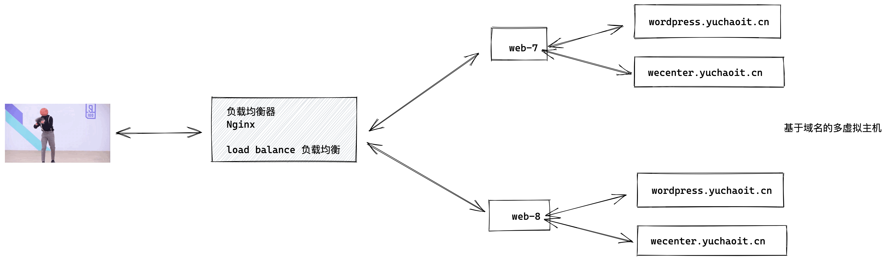
高可用性负载均衡集群
在集群中任意一个节点失效的情况下，该节点上的所有任务会自动转移到其他正常的节点上。
此过程并不影响整个集群的运行。
当集群中的一个节点系统发生故障时，运行着的集群服务会迅速作出反应，将该系统的服务分配到集群中其他正在工作的系统上运行。
考虑到计算机硬件和软件的容错性，高可用性集群的主要目的是使集群的整体服务尽可能可用。
如果高可用性集群中的主节点发生了故障，那么这段时间内将由备节点代替它。
备节点通常是主节点的镜像。当它代替主节点时，它可以完全接管主节点（包括IP地址及其他资源）提供服务，因此，使集群系统环境对于用户来说是一致的，即不会影响用户的访问。
高可用性集群使服务器系统的运行速度和响应速度会尽可能的快。他们经常利用在多台机器上运行的冗余节点和服务来相互跟踪。如果某个节点失败，它的替补者将在几秒钟或更短时间内接管它的职责。因此，对于用户而言，集群里的任意一台机器宕机，业务都不会受影响（理论情况下）。
高可用性集群的作用为：
当一台机器宕机时，另外一台机器接管宕机的机器的IP资源和服务资源，提供服务。
高可用性集群常用的开源软件包括Keepalived，Heartbeat等，其架构图如下图所示：
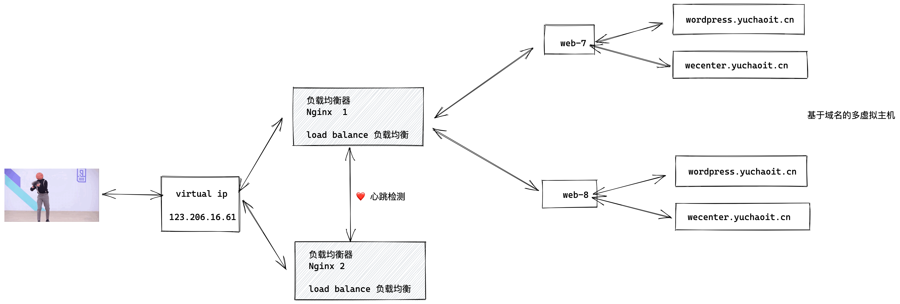
企业常见LB软件、硬件
互联网公司常用的开源软件、nginx、lvs、haproxy、keepalived、heartbeat。
商业集群软件，有F5、Netscaler等。
商业LB硬件Netscaler
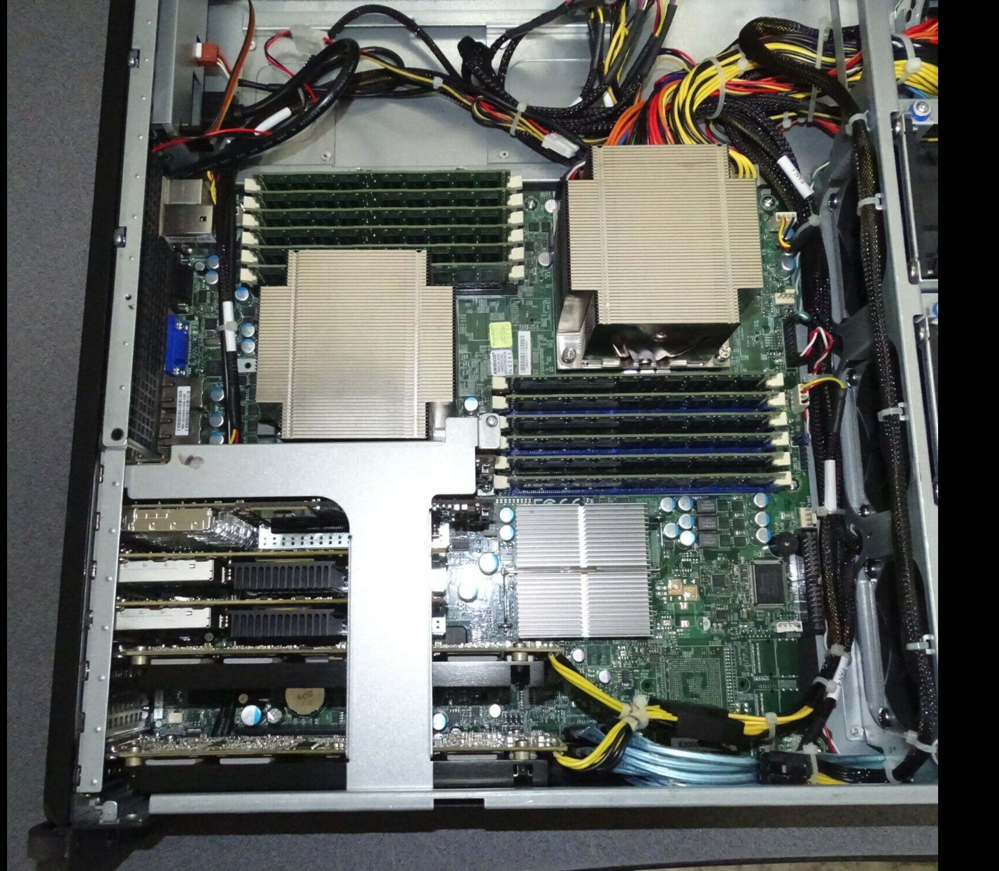
https://www.citrix.com/content/dam/citrix/zh-cn/documents/products-solutions/netscaler-data-sheet.pdf
商业LB硬件F5
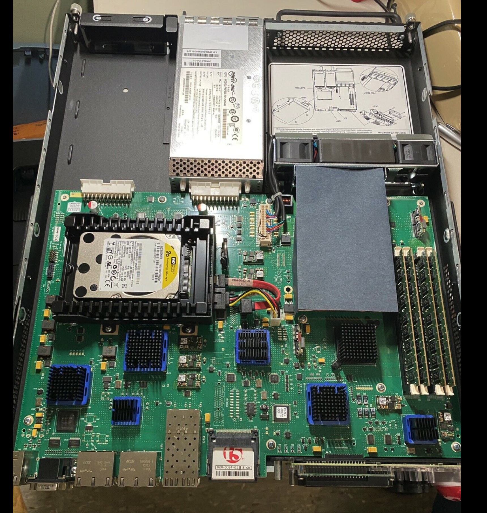
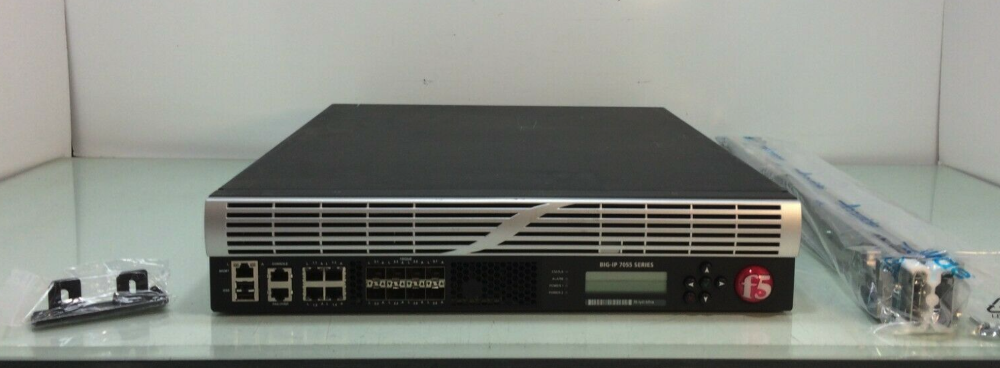
软件、硬件对比
当企业业务重要，技术力量又薄弱，并且希望出钱购买产品及获取更好的服务时，可以选择硬件负载均衡产品，如F5，Netscaler，Radware等，此类公司多为传统的大型非互联网企业，如银行，证券，金融业及宝马，奔驰公司等
对于门户网站来说，大多会并用软件及硬件产品来分担单一产品的风险，如淘宝，腾讯，新浪等。融资了的企业会购买硬件产品，如赶集网等网站。
中小型互联网企业，由于起步阶段无利润可赚或者利润很低，会希望通过使用开源免费的方案来解决问题，因此会雇佣专门的运维人员进行维护。例如：51CTO等
相比较而言，商业的负载均衡产品成本高，性能好，更稳定，缺点是不能二次开发，开源的负载均衡软件对运维人员的能力要求较高，如果运维及开发能力强，那么开源的负载均衡软件是不错的选择，目前的互联网行业更倾向于使用开源的负载均衡软件。
开源LB软件选择
中小企业互联网公司网站在并发访问和总访问量不是很大的情况下，建议首选Nginx负载均衡
理由是Nginx负载均衡配置简单，使用方便，安全稳定，社区活跃，使用的人逐渐增多，成为流行趋势。
另外一个实现负载均衡的类似产品为Haproxy（支持L4和L7负载，同样优秀，但社区不如Nginx活跃）。
如果要考虑Nginx负载均衡的高可用功能，建议首选Keepalived软件，理由是安装和配置简单，使用方便，安全稳定，与Keepalived服务类似的高可用软件还有Heartbeat（使用比较复杂，并不建议初学者使用）
图解负载均衡
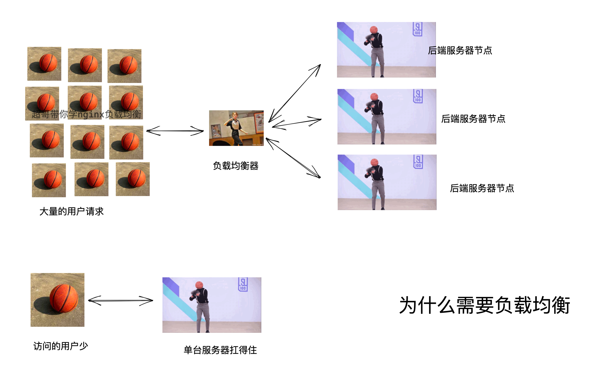
正向代理
正向代理（forward proxy）：是一个位于客户端和目标服务器之间的服务器(代理服务器)，为了从目标服务器取得内容，客户端向代理服务器发送一个请求并指定目标，然后代理服务器向目标服务器转交请求并将获得的内容返回给客户端。
这种代理其实在生活中是比较常见的，比如访问外国网站技术，其用到的就是代理技术。
有时候，用户想要访问某国外网站，该网站无法在国内直接访问，但是我们可以访问到一个代理服务器，这个代理服务器可以访问到这个国外网站。
这样呢，用户对该国外网站的访问就需要通过代理服务器来转发请求，并且该代理服务器也会将请求的响应再返回给用户。这个上网的过程就是用到了正向代理。
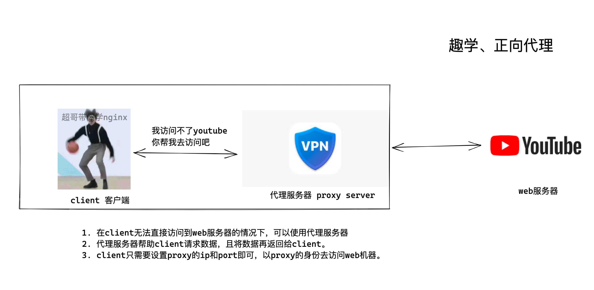
所以正向代理，是proxy-server 代理了 client，然后与web服务器交互。
通过正向代理访问目标服务器，目标服务器就无法知道真正的client到底是谁。
用途
- 通过代理服务器，突破client本身的ip访问限制，访问国外资源。
- 隐藏client真实信息，可以保护client服务器，隐藏自己的ip，免受攻击。
反向代理
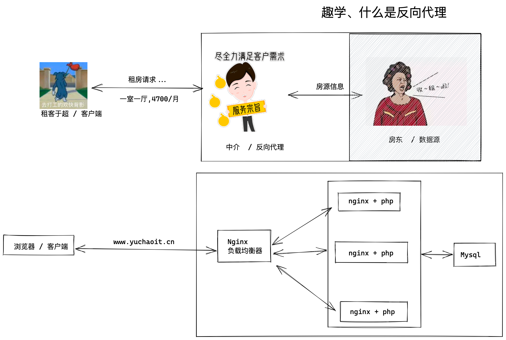
反向代理（reverse proxy）：是指以代理服务器来接受internet上的连接请求，然后将请求转发给内部网络上的服务器，并将从服务器上得到的结果返回给internet上请求连接的客户端，此时代理服务器对外就表现为一个反向代理服务器。
1. client 访问 web-server，但是并不知道访问的其实是一个反向代理服务器,在client眼里，这个代理服务器就是web服务器。
2. 代理服务器获取到web服务器的数据后，返回给client。
3. 此时的client 无须做任何的设置，只需要正常访问即可，因此此时被隐藏的是服务端(web-server)。
所以你会发现，反向代理，这个代理机器，代理的是服务端。
客户端的访问请求，到底被转发给了哪一个web-server，我们无从得知，也无须得知。
用途
- 隐藏服务端真实IP，保护远端服务器安全。
- 负载均衡，反向代理服务器可以根据用户请求决定转发给哪一个后端节点服务器。
- 提高访问速度，反向代理服务器可以缓存大多数静态资源，提高静态请求的解析速度。
- 提供安全保证，反向代理服务器可以作为应用防火墙，提供https访问认证，防止ddos攻击，用户访问行为分析等。
对比正向代理、反向代理（精华）
虽然会发现，正向、反向代理服务器，都是处于client、server之间，并且做的事情也都是吧client的请求转发给server，然后进行响应，但是二者的目的是不一样的。
- 正向代理其实是，代理客户端
- 帮助客户端访问一些受限的资源，如国外的资料，如企业内部的内网资料。
- 一般是客户端搭建，如安装某一个代理软件，填入代理服务器的ip、port
- 此时server无法得知client到底是谁，看到的只能是proxy的IP。
- 反向代理其实是代理服务端
- 帮助服务端做负载均衡，安全防护
- 一般是在服务端搭建，如部署nginx代理服务器。
- 此时client无法得知server到底是谁，以为自己访问的就是真实的server。
灵魂画手
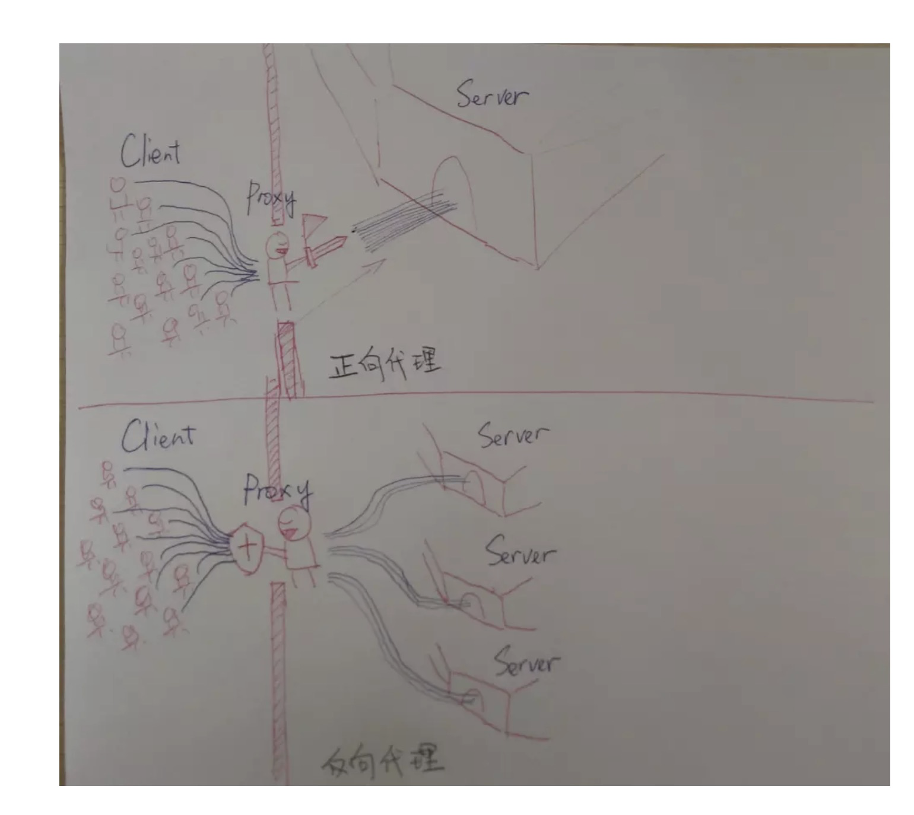
一、实战Nginx反向代理
官网
https://nginx.org/en/docs/http/ngx_http_proxy_module.html
核心参数解释
使用反向代理，难点在于请求转发之后，你得注意保留client本身的信息。
因为nginx反向代理是又再次向后端节点发出新请求。
关于这些转发参数，主要用于为了解决一些业务需求，而设置，否则一般默认即可。
proxy_set_header Host $http_host;
lb服务器将用户访问网站的hosts信息转发给后端节点
proxy_set_header X-Forwarded-For $proxy_add_x_forwarded_for ;
将用户真实的ip传递给后端的节点
proxy_connect_timeout 60s;
peoxy和server的连接超时，要求不超过75s；
proxy_send_timeout 60s;
proxy等待server回传数据的超时时间
proxy_read_timeout 60s；
proxy等待server响应的超时;
proxy_buffering on | off;
把server返回的数据先放入缓冲区，然后再返回给client，一边收数据，一边传递，而不是全部接收完再传递。
proxy_buffers 4 128k;
缓冲区的容量参数；
图解部署流程
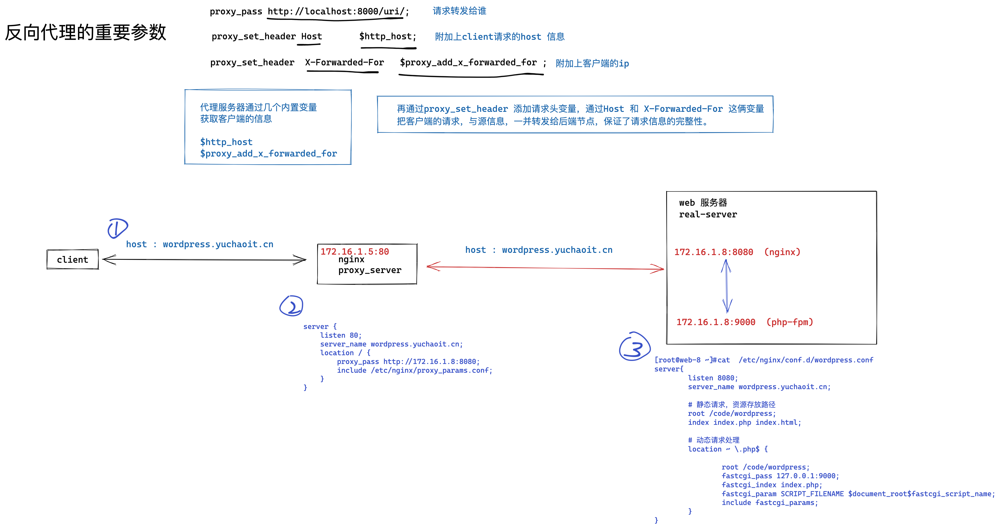
0.nginx反向代理参数优化
nginx反向代理的参数可能会很多，如何你每一个虚拟主机server{}都设置，配置文件将会非常丑陋，因此可以利用include导入。
cat > /etc/nginx/proxy_params.conf << 'EOF'
proxy_set_header Host $http_host;
proxy_set_header X-Forwarded-For $proxy_add_x_forwarded_for;
proxy_connect_timeout 30;
proxy_send_timeout 60;
proxy_read_timeout 60;
proxy_buffering on;
proxy_buffer_size 32k;
proxy_buffers 4 128k;
EOF
1.lb-5机器实践
1. 安装nginx，配置yum源，依然使用官网最新的nginx
[root@lb-5 ~]#cat /etc/yum.repos.d/nginx.repo
[nginx-stable]
name=nginx stable repo
baseurl=http://nginx.org/packages/centos/$releasever/$basearch/
gpgcheck=1
enabled=1
gpgkey=https://nginx.org/keys/nginx_signing.key
2.安装nginx
yum clean all
yum install nginx -y
3.创建转发proxy参数文件
cat > /etc/nginx/proxy_params.conf << 'EOF'
proxy_set_header Host $http_host;
proxy_set_header X-Forwarded-For $proxy_add_x_forwarded_for;
proxy_connect_timeout 30;
proxy_send_timeout 60;
proxy_read_timeout 60;
proxy_buffering on;
proxy_buffer_size 32k;
proxy_buffers 4 128k;
EOF
[root@lb-5 ~]#ls /etc/nginx/
conf.d fastcgi_params mime.types modules nginx.conf proxy_params.conf scgi_params uwsgi_params
4.创建反向代理配置文件
cat > /etc/nginx/conf.d/proxy.conf <<EOF
server {
listen 80;
server_name wordpress.yuchaoit.cn;
location / {
proxy_pass http://172.16.1.8:8080;
include /etc/nginx/proxy_params.conf;
}
}
EOF
5.启动代理nginx服务
[root@lb-5 ~]#systemctl start nginx
2.部署后端节点(web-8)
1.注意我们是修改了后端节点的入口为 172.16.1.8:8080
2.修改配置文件
[root@web-8 ~]#cat /etc/nginx/conf.d/wordpress.conf
server{
listen 8080;
server_name wordpress.yuchaoit.cn;
# 静态请求，资源存放路径
root /code/wordpress;
index index.php index.html;
# 动态请求处理
location ~ \.php$ {
root /code/wordpress;
fastcgi_pass 127.0.0.1:9000;
fastcgi_index index.php;
fastcgi_param SCRIPT_FILENAME $document_root$fastcgi_script_name;
include fastcgi_params;
}
}
3.启动nginx（后端节点）
[root@web-8 ~]#systemctl start nginx
3.后端节点日志设置(web-8)
通过nginx的访客日志，查看具体的请求详细信息
[root@web-8 ~]#cat /etc/nginx/nginx.conf
user nginx;
worker_processes auto;
error_log /var/log/nginx/error.log notice;
pid /var/run/nginx.pid;
events {
worker_connections 1024;
}
http {
include /etc/nginx/mime.types;
default_type application/octet-stream;
log_format main '$remote_addr - $remote_user [$time_local] "$request" '
'$status $body_bytes_sent "$http_referer" '
'"$http_user_agent" "$http_x_forwarded_for"';
access_log /var/log/nginx/access.log main;
sendfile on;
#tcp_nopush on;
keepalive_timeout 65;
#gzip on;
include /etc/nginx/conf.d/*.conf;
}
4.测试访问(windows)
client 访问 lb-5代理服务器，请求会转发给 web-8，最终一步步返回。
注意修改dns了
10.0.0.5 www.yuchaoit.cn wecenter.yuchaoit.cn wordpress.yuchaoit.cn
4.1 做好日志监测
lb-5
[root@lb-5 ~]#tail -f /var/log/nginx/access.log
web-8
[root@web-8 ~]#tail -f /var/log/nginx/access.log
4.2 windows客户端访问
使用强制刷新
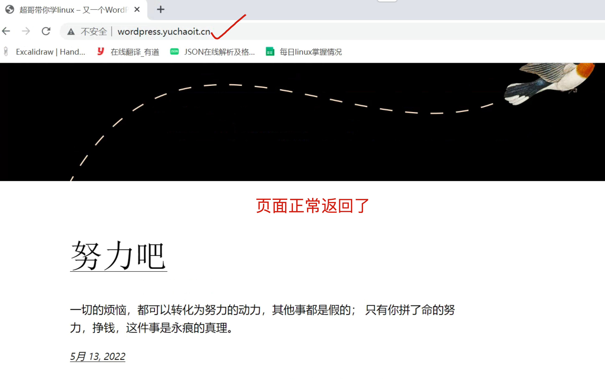
4.3 查看日志
lb-5
[root@lb-5 ~]#tail -f /var/log/nginx/access.log
web-8
[root@web-8 ~]#tail -f /var/log/nginx/access.log
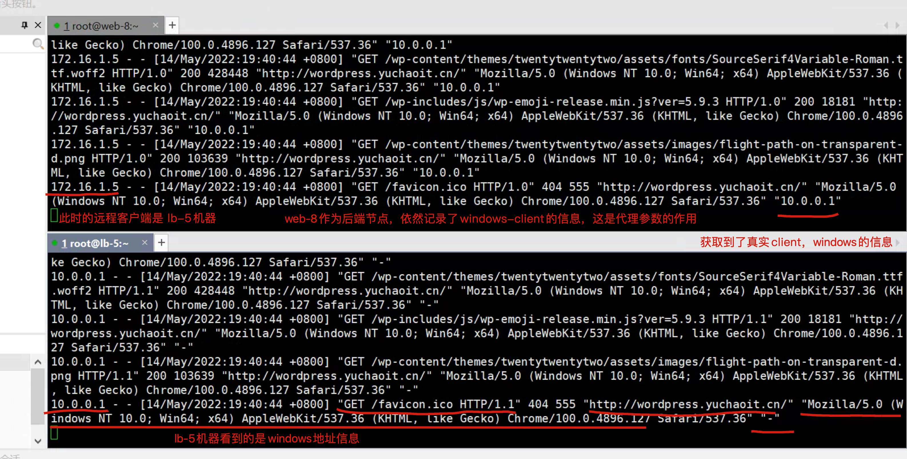
5.试试去掉转发参数呢？
5.1 去掉客户端真实ip
proxy_set_header Host $http_host;
#proxy_set_header X-Forwarded-For $proxy_add_x_forwarded_for;
proxy_connect_timeout 30;
proxy_send_timeout 60;
proxy_read_timeout 60;
proxy_buffering on;
proxy_buffer_size 32k;
proxy_buffers 4 128k;
Web-8机器看不到windows-client的地址了。
5.2 去掉客户端主机信息
#proxy_set_header Host $http_host;
#proxy_set_header X-Forwarded-For $proxy_add_x_forwarded_for;
proxy_connect_timeout 30;
proxy_send_timeout 60;
proxy_read_timeout 60;
proxy_buffering on;
proxy_buffer_size 32k;
proxy_buffers 4 128k;
由于是通过域名访问，且代理服务器没有添加客户端的主机信息，无法正确访问携带域名的请求。
wordpress.yuchaoit.cn
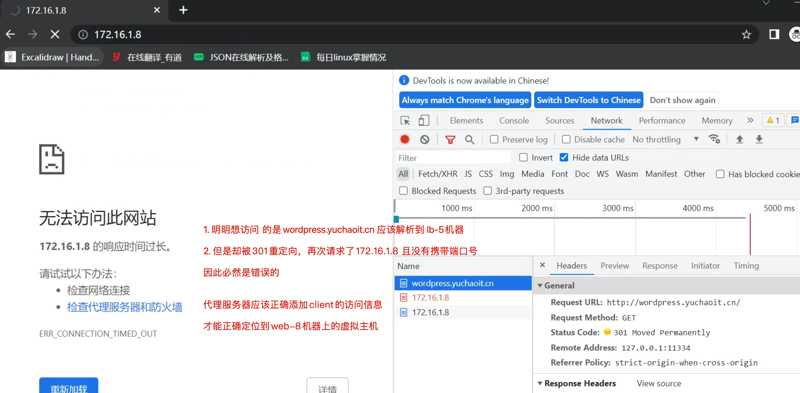
反向代理总结图解
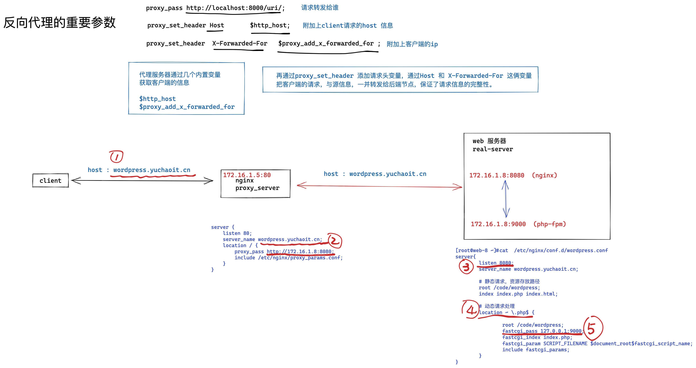
Nginx负载均衡
- 刚才超哥讲解的是反向代理的设置，与应用
- 现在你需要将后端节点部署多个，从而实现负载均衡。
1.什么是LB
1. web服务器需要解析用户大量的并发七牛，单机难以负荷
2. 使用多个web机器组成集群，前端用nginx负载均衡，将请求打散到多个后端节点。
3. 极大的提高整体系统的性能，安全，高可用。
2.负载均衡和反向代理
反向代理，代理的是一组服务器，因此就实现了负载均衡的效果。
3.四层负载、七层负载区别
nginx强大在于可以针对用户访问的url进行判断，从而决定后续的动作。
想到这里，记得第一份工作老大问我，nginx熟么，说说七层代理，和四层代理区别。
来，教大家怎么回答。。当然，回答只是为了技术交流，看看你是否会用nginx。
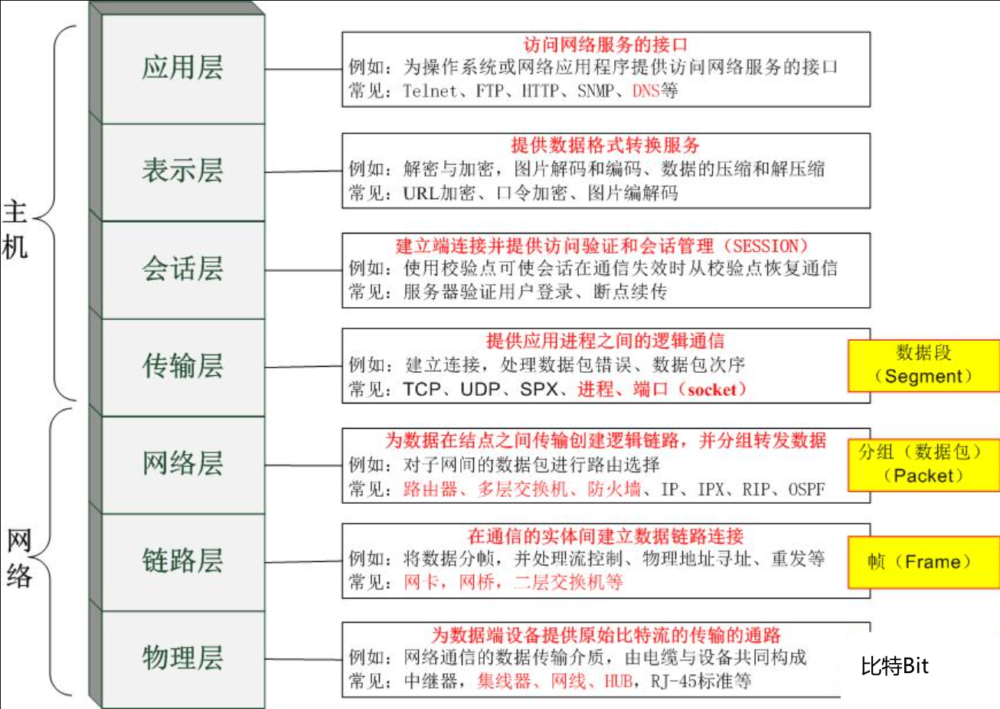
这里的几层，主要指的是OSI网络模型的一共七层。
3.1 四层负载均衡
指的就是前四层，一直到TCP/IP层，传输层。
传输层，指的就是基于ip+port的通信，以及负载均衡。
四层负载均衡软件有LVS，性能更高，因为四层LB在接收到client的请求后，只需要通过数据包的目的地址信息（ip+port）然后将流量转发给后端节点。
因此是只针对ip+port协议的数据包转发，而不需要做一些额外复杂逻辑处理，效率就很高。
通过学习，使用LVS来实现负载均衡即可理解过程。
3.2 七层负载均衡
1.七层负载均衡是指OSI模型的应用层，也就是基于第七层的协议转发，如http，https协议；
2.因此内容更丰富，例如基于client的访问url区别、客户端的浏览器区别、客户端的ip地址区别，来决定不同的负载均衡动作。
3.当然OSI模型是自下而上的，nginx是在支持tcp/ip基础之上的，同时支持四层、与七层的转发设置。
4. http层的负载均衡主要指的是，通过http信息的改写，请求头的改写，url匹配规则，proxy_pass，以及rewrite等规则。
所以说为什么nginx使用的非常广泛，就是如此，因为互联网环境，绝大部分就完全是http协议的通信。
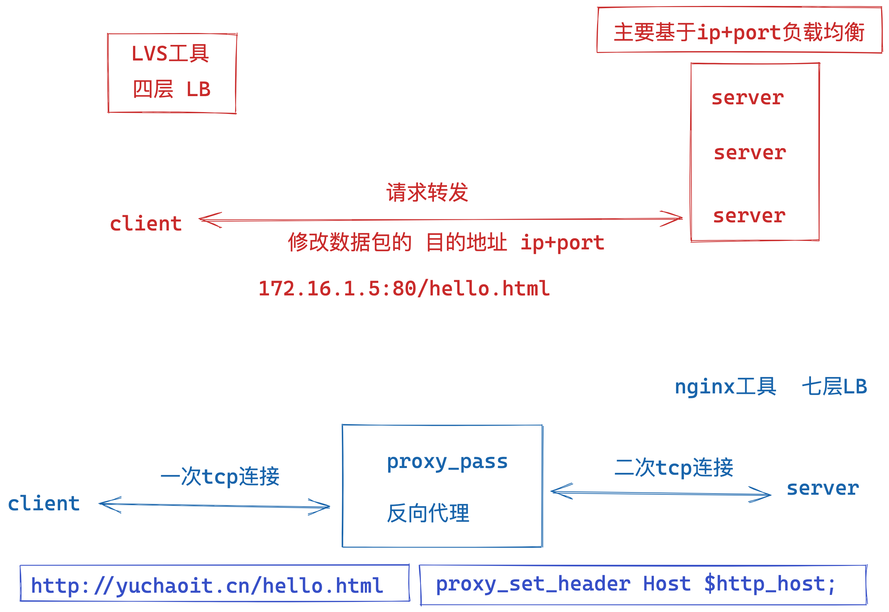
3.3 大并发优化（lvs+nginx）
这种架构，就是充分发挥 四层lb 以及 七层lv 二者的优点
1. 让lvs 抗住外网的大流量，然后负载均衡的把流量分发给后端的多个nginx七层负载均衡
2. 后端的nginx再进行后续的用户请求转发，来实现丰富的七层反向代理。
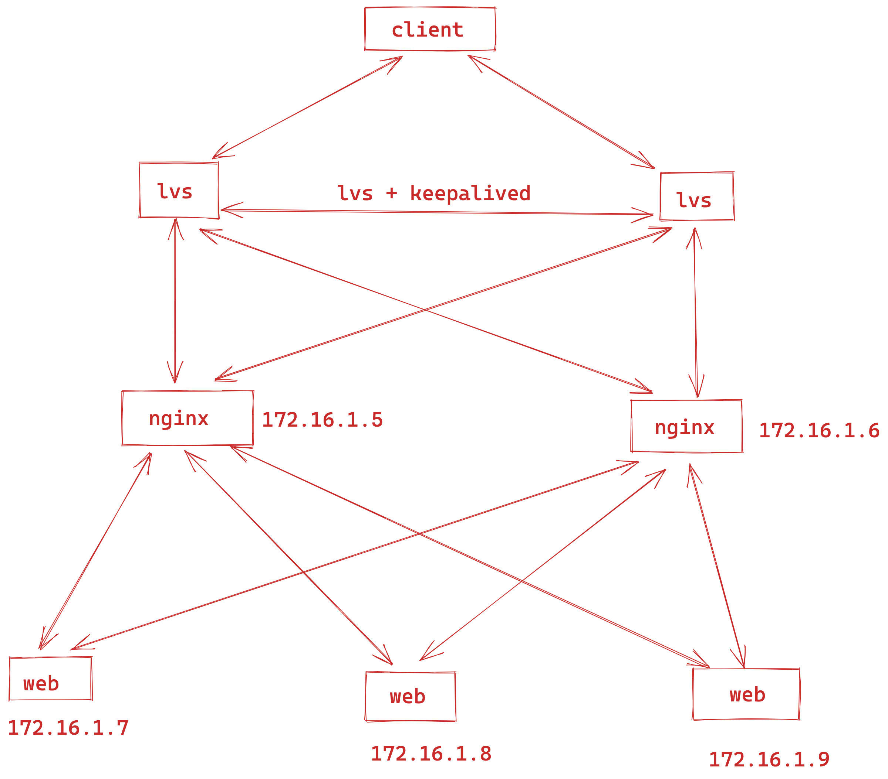
4.负载均衡实践配置（nginx）
官网模块
https://nginx.org/en/docs/http/ngx_http_upstream_module.html
Nginx的负载均衡功能来自于其模块ngx_http_upstream_module模块，该模块支持的代理方式有：
- uwsgi_pass
- Fastcgi_pass
- proxy_pass
- Memcached_pass
- ...
ngx_http_upstream_module模块允许Nginx定义一组或多组节点服务器，使用时可以通过proxy_pass代理方式，把用户请求发送到事先定于好的upstream组中。
具体写法就是
upstream backend { # 定义后端服务器组列表
# 具体的服务器地址形式，可以是ip，域名，以及port的结合。
# 以及填入负载均衡的 算法参数
server backend1.example.com weight=5;
server backend2.example.com:8080;
server unix:/tmp/backend3;
server backup1.example.com:8080 backup;
server backup2.example.com:8080 backup;
}
server {
# 七层负载均衡核心，基于location匹配url，决定后续动作
location / {
# 转发给地址池
proxy_pass http://backend;
}
}
upstream参数
# 参数解释
server是固定关键字，后面跟着服务器ip或是域名，默认是80端口，也可以指定端口
weight表示节点的权重，数字越大，分配的请求越多，注意nginx结尾的分号
max_fails Nginx尝试连接后端节点失败的次数，根据企业情况调整，默认是1
backup 其它所有的非backup机器down或者忙的时候，请求backup机器，实现热备效果。
fail_timeout 在max_fails定义的次数失败后，距离下次检查的间隔时间，默认10s
down 表示当前主机暂停，不参与负载均衡
upstream模块的内容应放于nginx.conf配置中的 http{}标签内
其默认调度算法是wrr(权重轮询，weighted round-robin)
5. 实战七层负载均衡（nginx）
需求
1. 设置 lb服务器，绑定 wordpress.yuchaoit.cn
2. 默认轮询模式，转发给 web-7 web-8两个机器，分别提供web服务
5.1 机器准备
10.0.0.5 172.16.1.5 slb-5
10.0.0.7 172.16.1.7 web-7
10.0.0.8 172.16.1.8 web-8
5.2 web服务器组配置文件
Web-7
[root@web-7 ~]#cat /etc/nginx/conf.d/wordpress.conf
server{
listen 8080;
server_name wordpress.yuchaoit.cn;
# 静态请求，资源存放路径
root /code/wordpress;
index index.php index.html;
# 动态请求处理
location ~ \.php$ {
root /code/wordpress;
fastcgi_pass 127.0.0.1:9000;
fastcgi_index index.php;
fastcgi_param SCRIPT_FILENAME $document_root$fastcgi_script_name;
include fastcgi_params;
}
}
[root@web-7 ~]#systemctl restart nginx
web-8机器
[root@web-8 ~]#cat /etc/nginx/conf.d/wordpress.conf
server{
listen 8080;
server_name wordpress.yuchaoit.cn;
# 静态请求，资源存放路径
root /code/wordpress;
index index.php index.html;
# 动态请求处理
location ~ \.php$ {
root /code/wordpress;
fastcgi_pass 127.0.0.1:9000;
fastcgi_index index.php;
fastcgi_param SCRIPT_FILENAME $document_root$fastcgi_script_name;
include fastcgi_params;
}
}
[root@web-8 ~]#systemctl restart nginx
5.3 lb机器配置文件
[root@lb-5 ~]#cat /etc/nginx/conf.d/proxy.conf
upstream web-pools {
server 172.16.1.7:8080;
server 172.16.1.8:8080;
}
server {
listen 80;
server_name wordpress.yuchaoit.cn;
location / {
proxy_pass http://web-pools;
include /etc/nginx/proxy_params.conf;
}
}
[root@lb-5 ~]#nginx -t
nginx: the configuration file /etc/nginx/nginx.conf syntax is ok
nginx: configuration file /etc/nginx/nginx.conf test is successful
[root@lb-5 ~]#
[root@lb-5 ~]#systemctl restart nginx
6.测试访问（图解）
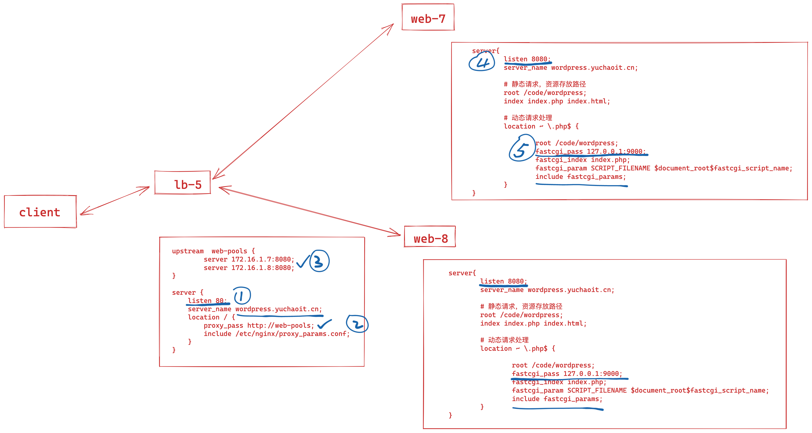
配置dns解析
10.0.0.5 www.yuchaoit.cn wecenter.yuchaoit.cn wordpress.yuchaoit.cn
全部做好日志检测
[root@web-7 ~]#tail -f /var/log/nginx/access.log
[root@web-8 ~]#tail -f /var/log/nginx/access.log
[root@lb-5 ~]#tail -f /var/log/nginx/access.log
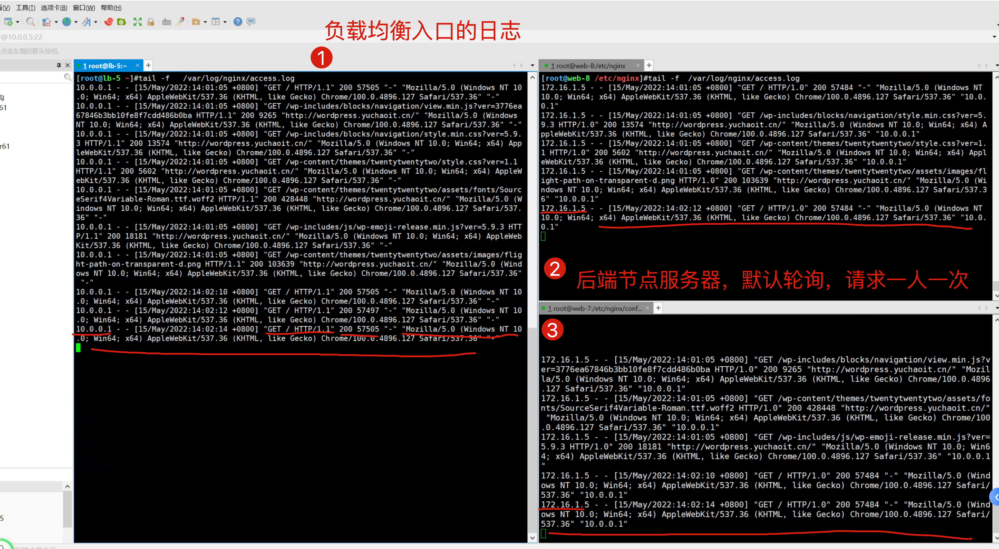
这里的是完全基于域名实现的负载均衡
1. 用户在浏览器访问wordpress
2. lb-5接收到请求，保留用户的客户端信息，添加在反向代理参数里，再发出新请求，给后端节点
3.后端节点能够通过本次请求的请求头，获取到用户信息，具体要访问什么资源（url），然后进行解析，响应。
4.最终一步步返回，给用户浏览器结果。
6.1试试关闭后端一个节点
模拟单点故障，发现并没有问题，请求全部给了其他的机器。
[root@web-8 /etc/nginx]#systemctl stop nginx
全部故障呢？
[root@web-7 /etc/nginx/conf.d]#systemctl stop nginx
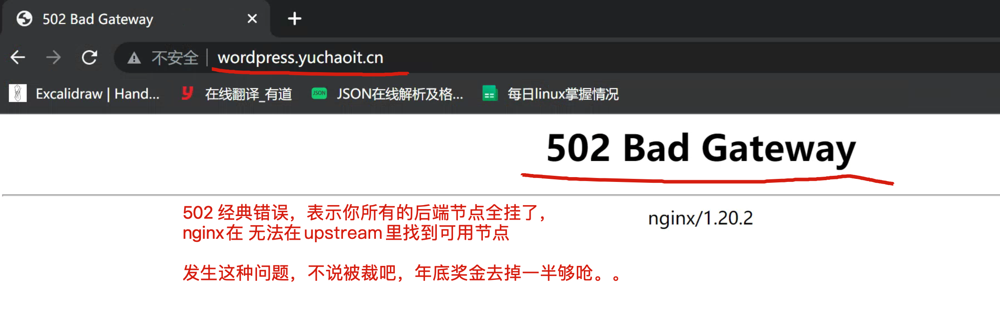
7.实战四层负载均衡（nginx）
四层负载均衡就是完全基于ip、port进行负载均衡。
使用stream{} 独立模块，与 http{} 模块平级，注意配置文件写法
https://nginx.org/en/docs/stream/ngx_stream_core_module.html
7.1 四层负载需求
注意这里不用去考虑关于数据的一致性问题，只是为了测试，查看四层的负载均衡转发情况。
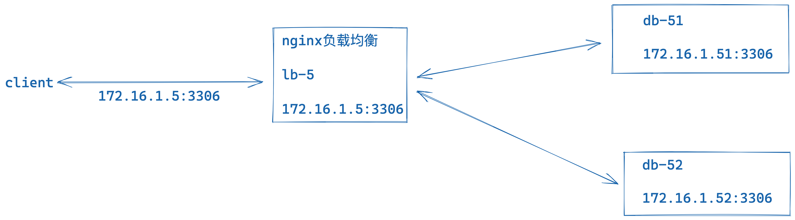
7.3 环境准备
172.16.1.5:3306 （nginx）
172.16.1.51:3306 （mysql）
172.16.1.52:3306 （mysql）
7.4 统一安装mysql（51,52）
yum install mariadb mariadb-server -y
systemctl start mariadb
systemctl enable mariadb
mysqladmin password 'yuchaoit.cn'
配置权限，允许root远程连接
mysql -uroot -p'yuchaoit.cn'
grant all privileges on *.* to 'root'@'%' identified by 'yuchaoit.cn';
7.5 负载均衡配置 lb-5
# nginx配置文件
# 无须关于http的请求参数了
[root@lb-5 /etc/nginx]#cat /etc/nginx/nginx.conf
user nginx;
worker_processes auto;
error_log /var/log/nginx/error.log notice;
pid /var/run/nginx.pid;
events {
worker_connections 1024;
}
stream {
upstream mysql_pool {
server 172.16.1.51:3306 max_fails=3 fail_timeout=30s;
server 172.16.1.52:3306 max_fails=3 fail_timeout=30s;
}
server {
listen 0.0.0.0:3306;
proxy_pass mysql_pool;
}
}
# 启动nginx
[root@lb-5 /etc/nginx]#nginx -t
nginx: the configuration file /etc/nginx/nginx.conf syntax is ok
nginx: configuration file /etc/nginx/nginx.conf test is successful
[root@lb-5 /etc/nginx]#systemctl restart nginx
7.6 客户端测试四层转发
yum install mariadb -y
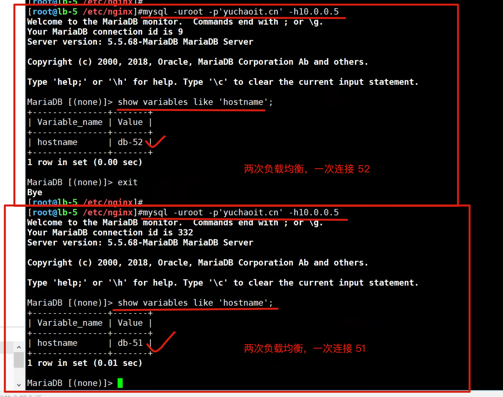